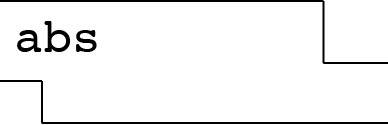
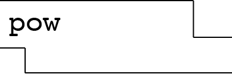
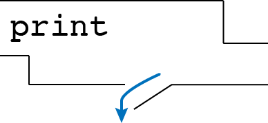

Control
- Press O or Escape for overview mode.
- Visit this link for a nice printable version
- Press the copy icon on the upper right of code blocks to copy the code
Class outline:
- Side effects
- More function features
- Conditionals
- Booleans
- Iteration
Side effects
The None value
The special value None represents nothingness in Python.
Any function that doesn't explicitly return a value will return None:
def square_it(x):
x * x
When a function returns None, the console shows no output at all:
square_it(4)
Attempting to treat the None like a number will result in an error:
sixteen = square_it(4)
sum = sixteen + 4 # 🚫 TypeError!
Side effects
A side effect is when something happens as a result of calling a function besides just returning a value.
The most common side effect is logging to the console, via the built-in print() function.
print(-2)
Other common side effects: writing to files, drawing graphics on the screen.
Side effects vs. Return values
def square_num1(number):
return pow(number, 2)
def square_num2(number):
print(number ** 2)
- Which one has a side effect?
The second function has a side effect, because it prints to the console.
- What data type do they each return?
The first function returns a number, the second one returnsNone.
Pure vs. non-pure functions
| Arguments | Return value | ||
|---|---|---|---|
| Pure functions just return values. |
-2 |  | 2 |
| 2, 10 |  | 1024 | |
| Non-pure functions have side effects. |
-2 |

Python displays output "-2" |
None
|
Nested print statements
What will this display?
print(print(1), print(2))
More function features
Default arguments
In the function signature, a parameter can specify a default value. If that argument isn't passed in, the default value is used instead.
def calculate_dog_age(human_years, multiplier = 7):
return human_years * multiplier
These two lines of code have the same result:
calculate_dog_age(3)
calculate_dog_age(3, 7)
Default arguments can be overriden two ways:
calculate_dog_age(3, 6)
calculate_dog_age(3, multiplier=6)
Multiple return values
A function can specify multiple return values, separated by commas.
def divide_exact(n, d):
quotient = n // d
remainder = n % d
return quotient, remainder
Any code that calls that function must also "unpack it" using commas:
q, r = divide_exact(618, 10)
Doctests
Doctests check the input/output of functions.
def divide_exact(n, d):
"""
>>> q, r = divide_exact(2021, 10)
>>> q
202
>>> r
1
"""
quotient = n // d
remainder = n % d
return quotient, remainder
See more in Python doctests documentation.
Boolean expressions
Booleans
A Boolean value is either True or False
and is used frequently in computer programs.
Google Maps uses a boolean to decide whether to avoid highways in driving directions:
avoid_highways = True
Twitter uses a boolean to remember where the user allows personalized ads:
personalized_ads = False
Boolean expressions
An expression can evaluate to a Boolean. Most Boolean expressions use either comparison or logical operators.
An expression with a comparison operator:
passed_class = grade > 65
An expression with a logical operator:
wear_jacket = is_raining or is_windy
Comparison operators
| Operator | Meaning | True expressions |
| == | Equality | 32 == 32, 'a' == 'a'
|
| != | Inequality | 30 != 32, 'a' != 'b'
|
| > | Greater than | 60 > 32
|
| >= | Greater than or equal | 60 >= 32 , 32 >= 32
|
| < | Less than | 20 < 32
|
| <= | Less than or equal | 20 <= 32, 32 <= 32
|
⚠️ Common mistake: Do not confuse = (the assignment operator) with == (the equality operator).
Logical operators
| Operator | True expressions | Meaning |
|---|---|---|
and | 4 > 0 and -2 < 0 | Evaluates to True if both conditions are true. If one is False evaluates to False.
|
or | 4 > 0 or -2 > 0 | Evaluates to True if either condition is true. Evaluates to False only if both are false.
|
not | not (5 == 0) | Evaluates to True if condition is false; evaluates to False if condition is true.
|
Compound booleans
When combining multiple operators in a single expression, use parentheses to group:
may_have_mobility_issues = (age >= 0 and age < 2) or age > 90
Boolean expressions in functions
A function can use a Boolean expression to return a result based on the values of the parameters.
def passed_class(grade):
return grade > 65
def should_wear_jacket(is_rainy, is_windy):
return is_rainy or is_windy
Exercise
These are un-graded exercises you can do after the lecture to make sure you grok the basics:
Statements
Statements
A statement is executed by the interpreter to perform an action.
So far we've seen a few...
| Statement type | Example |
|---|---|
| Assignment statement |
|
| Def statement | |
| Return statement | |
Compound statements
A compound statement contains groups of other statements.
<header>: # CLAUSE
<statement> # SUITE
<statement>
...
<separating header>: # CLAUSE
<statement> # SUITE
<statement>
...
The first header determines a statement's type, and the header of each clause controls the suite that follows.
Execution of suites
A suite is a sequence of statements.
<header>:
<statement> # SUITE
<statement>
...
<separating header>:
<statement> # SUITE
<statement>
...
Execution rule for a sequence of statements:
- Execute the first statement
- Unless directed otherwise, execute the rest
Conditional statements
Conditional statements
A conditional statement gives your code a way to execute a different suite of code statements based on whether certain conditions are true or false.
if <condition>:
<statement>
<statement>
...
A simple conditional:
clothing = "shirt"
if temperature < 32:
clothing = "jacket"
Compound conditionals
A conditional can include any number of elif
statements to check other conditions.
if <condition>:
<statement>
...
elif <condition>:
<statement>
...
elif <condition>:
<statement>
...
clothing = "shirt"
if temperature < 0:
clothing = "snowsuit"
elif temperature < 32:
clothing = "jacket"
The else statement
A conditional can include an else
to specify code to execute if no previous conditions are true.
if <condition>:
<statement>
...
elif <condition>:
<statement>
...
else <condition>:
<statement>
...
if temperature < 0:
clothing = "snowsuit"
elif temperature < 32:
clothing = "jacket"
else:
clothing = "shirt"
Conditional statements summary
if num < 0:
sign = "negative"
elif num > 0:
sign = "positive"
else:
sign = "neutral"
Syntax tips:
- Always start with
ifclause. - Zero or more
elifclauses. - Zero or one
elseclause, always at the end.
Execution of conditional statements
Each clause is considered in order.
- Evaluate the header's expression.
- If it's true, execute the suite of statements underneath and skip the remaining clauses.
- Otherwise, continue to the next clause.

Conditionals in functions
It's common for a conditional to be based on the value of the parameters to a function.
def get_number_sign(num):
if num < 0:
sign = "negative"
elif num > 0:
sign = "positive"
else:
sign = "neutral"
return sign
get_number_sign(50) # "positive"
get_number_sign(-1) # "negative"
get_number_sign(0) # "neutral"
Returns inside conditionals
A branch of a conditional can end in a return, which exits the function entirely.
def get_number_sign(num):
if num < 0:
return "negative"
elif num > 0:
return "positive"
else:
return "neutral"
get_number_sign(50) # "positive"
get_number_sign(-1) # "negative"
get_number_sign(0) # "neutral"
Exercise
These are un-graded exercises you can do after the lecture to make sure you grok the basics:
While loops
Why loops?
Consider the following code...
print(9 * 1)
print(9 * 2)
print(9 * 3)
print(9 * 4)
print(9 * 5)
This code is repetitive and variable, but the variability is sequential - it just adds one to the right-hand side number each time. In English, we could describe this as "print out the first 5 multiples of 9".
We can simplify this code with a loop!
While loops
The while loop syntax:
while <condition>:
<statement>
<statement>
As long as the condition is true, the statements below it are executed.
multiplier = 1
while multiplier <= 5:
print(9 * multiplier)
multiplier += 1
The code is significantly shorter, and it can easily be extended to loop for more or less iterations.
Changing a while loop #1
You can change the initial values of the variables used in the condition:
multiplier = 3
while multiplier <= 5:
print(9 * multiplier)
multiplier += 1
- What will be the first thing displayed? 27
- What will be the last thing displayed? 45
- How many iterations? 3 (for values of 3, 4, 5)
Changing a while loop #2
You can change the condition:
multiplier = 3
while multiplier <= 10:
print(9 * multiplier)
multiplier += 1
- What will be the first thing displayed? 27
- What will be the last thing displayed? 90
- How many iterations? 8 (for values of 3, 4, 5, 6, 7, 8, 9, 10)
Changing a while loop #3
You can change how much the values change between iterations:
multiplier = 3
while multiplier <= 10:
print(9 * multiplier)
multiplier += 2
- What will be the first thing displayed? 27
- What will be the last thing displayed? 81
- How many iterations? 4 (for values of 3, 5, 7, 9)
Changing a while loop #4
You can change the computation inside the while loop:
multiplier = 3
while multiplier <= 10:
print(10 * multiplier)
multiplier += 2
- What will be the first thing displayed? 30
- What will be the last thing displayed? 90
- How many iterations? 4 (for values of 3, 5, 7, 9)
Using a counter variable
It's common to use a counter variable whose job is keeping track of the number of iterations.
total = 0
counter = 0
while counter < 5:
total += pow(2, 1)
counter += 1
The counter variable may also be involved in the loop computation:
total = 0
counter = 0
while counter < 5:
total += pow(2, counter)
counter += 1
Beware infinite loops
Uh oh..
counter = 1
while counter < 5:
total += pow(2, counter)
What one line of code would fix this?
counter += 1
counter = 6
while counter > 5:
total += pow(2, counter)
counter += 1
How do we save this code?
Intentions are unclear! Change the initial value and condition?
Execution of loops
- Evaluate the header’s Boolean expression.
- If it is a true value, execute the suite of statements, then return to step 1.

Loops in functions
A loop in a function will commonly use a parameter to determine some aspect of its repetition.
def sum_up_squares(start, end):
counter = start
total = 0
while counter <= end:
total += pow(counter, 2)
counter += 1
return total
sum_up_squares(1, 5)
The break statement
To prematurely exit a loop, use the break statement:
counter = 100
while counter < 200:
if counter % 7 == 0:
first_multiple = counter
break
counter += 1
Looping while true
If you are brave, you can write while loops like this:
counter = 100
while True:
if counter % 62 == 0:
first_multiple = counter
break
counter += 1
⚠️ Be very sure that you're not coding an infinite loop!
Exercise
These are un-graded exercises you can do after the lecture to make sure you grok the basics:
Example: Prime factors
A prime number is an integer greater than 1 whose only factors are 1 and the number itself (e.g., 3, 5, 7, 11).
def is prime(n):
"""Return True iff N is prime."""
return n > 1 and smallest factor(n) == n
def smallest factor(n):
"""Returns the smallest value k>1 that evenly divides N."""
???
def print factors(n):
"""Print the prime factors of N."""
???
Let's implement them together.